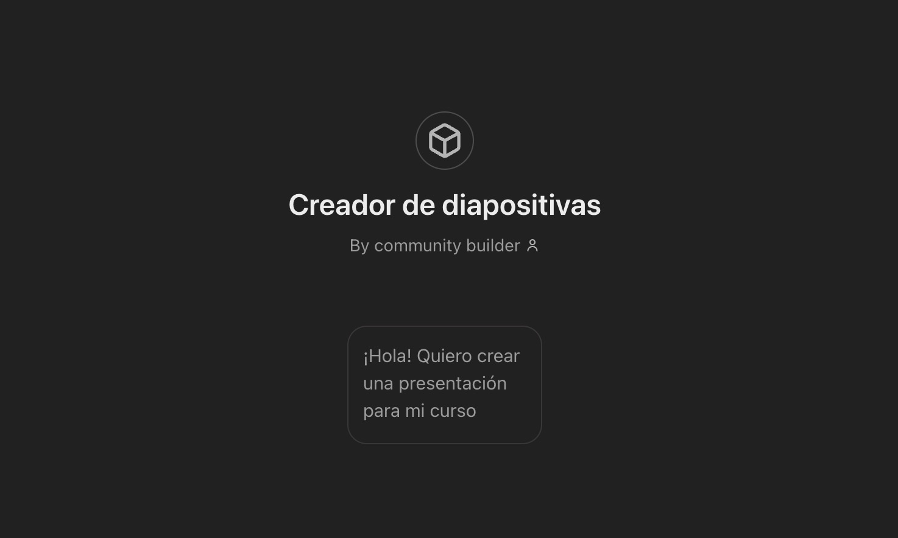
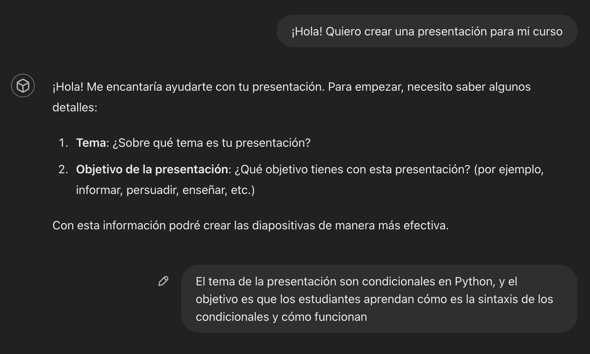
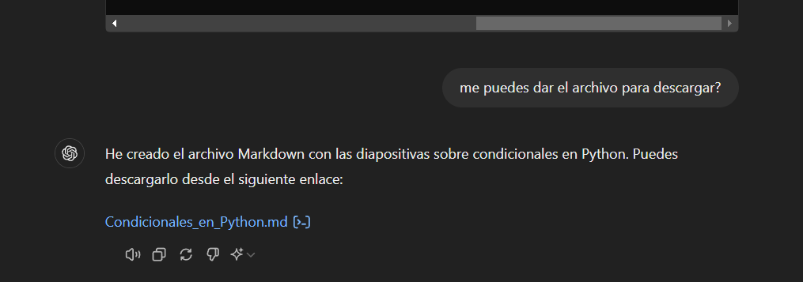

Este tutorial describe cómo crear diapositivas de PowerPoint utilizando IA generativa y Pandoc. Tenemos dos métodos para lograr esto:
- Usando un GPT para crear diapositivas (se requiere GPT Plus o una suscripción de pago de OpenAI).
- Usando un prompt de creación de diapositivas en el modelo de su preferencia.
Vamos a desarrollar ambas opciones en este codelab. Siéntase libre de elegir la que mejor se ajuste a sus necesidades. Le recomendamos usar el GPT en caso de que tenga acceso a GPT Plus.
Recursos:
Para utilizar el GPT de diapositivas, siga este enlace: GPT de creación de diapositivas.
Pasos
- Diríjase al enlace del GPT de creación de diapositivas y seleccione la opción "¡Hola! Quiero crear una presentación para mi curso".

- Se le preguntará por el tema y objetivo de su presentación. La idea es que detalle lo mejor posible cómo desea desarrollar el contenido de la diapositiva. En este ejemplo, se utiliza el tema de condicionales en Python.

- Posteriormente, se empezará a generar el contenido de las diapositivas.

- Una vez generado el contenido, se le preguntará si desea descargar el archivo markdown con el contenido. Responda que sí, y una vez procesado, haga clic en descargar.

Para empezar, utilice el siguiente prompt:
Eres un experto en creación de presentaciones. Tu tarea es crear unas diapositivas sobre [TEMA] con el objetivo de [OBJETIVO DE LA PRESENTACIÓN]. Cada diapositiva debe seguir las siguientes reglas propuestas por David Philips: "Un mensaje por diapositiva, minimizar el texto para evitar la redundancia, usar el tamaño para enfatizar el contenido importante, emplear el contraste para dirigir la atención y limitar el número de objetos a seis por diapositiva". Cada diapositiva debe tener un encabezado y utilizar viñetas. Opcionalmente debería poder contener imágenes, pero en lugar de colocar una imagen, debes colocar un placeholder que diga {{COLOCA AQUÍ UNA IMAGEN DE...}}, con la descripción de la imagen que debería ir ahí.
El formato que utilizarás para generar la diapositiva será markdown, utilizando un formato que pueda ser utilizado por Pandoc para convertir de md a pptx. Para ello, te presento las siguientes reglas que se pueden utilizar en Pandoc para crear slides de PowerPoint:
Here is some sample Markdown:
# Section Title
## Slide Title
Text on a slide:
* Bullet
* Bullet
* Bullet
::: notes
Speaker notes go here
:::
That fenced div notation lets you create columns using nested divs without writing <div> tags in HTML. Take a look at this example:
:::::::::::::: {.columns}
::: {.column width="50%"}
Left column:
- Bullet
- Bullet
- Bullet
:::
::: {.column width="50%"}
{{COLOCA AQUÍ UNA IMAGEN DE...}}
:::
::::::::::::::
This produces a left column with another column with an image at the right
Use latex formatted equations in markdown when asked for equations
Reemplace los parámetros [TEMA] y [OBJETIVO DE LA PRESENTACIÓN] con los datos del contenido que desea para sus diapositivas. Asegúrese de detallar lo más posible cómo desea desarrollar el contenido de las diapositivas.
Pasos
- Diríjase a su modelo de IA generativa de confianza, en este caso se usará ChatGPT de OpenAI.

- Copie el prompt con los valores ya reemplazados, péguelo en el chat y envíelo. En este ejemplo, vamos a crear unas diapositivas sobre condicionales en Python.

- Posteriormente, se empezará a generar el contenido de las diapositivas.
- Una vez generado el contenido, solicite la descarga del archivo que contiene las diapositivas.

Ahora, diríjase al sitio de Pandoc para convertir el archivo descargado en una presentación en formato PPTX. Puede acceder al sitio aquí: Pandoc.
Pasos
- Una vez en el sitio de Pandoc, seleccione la opción "Choose File".

- Busque en su explorador de archivos el markdown generado anteriormente con el contenido de las diapositivas y selecciónelo. En este caso, se llama "Condicionales_en_Python.md".

- Una vez cargado el archivo, en la parte superior derecha, seleccione la lista desplegable que dice "to" y elija la opción "pptx".

- Una vez seleccionada la opción "pptx", seleccione la opción descargar pptx que aparece en pantalla.

- Una vez descargado el archivo, ya puede abrirlo en PowerPoint o en un editor online de PowerPoint.

Siéntase en la libertad de modificar las diapositivas a su gusto, añadiendo y corrigiendo la información y formato que considere necesario.
Una vez que haya descargado las diapositivas, puede modificarlas a su gusto. Añada imágenes, cambie el formato, añada más contenido o elimine lo que considere necesario. Las diapositivas se crean con un formato básico, por lo que puede personalizarlas según sus necesidades.
En la pestaña superior de PowerPoint, diríjase a la opción "Diseño" para cambiar el diseño de las diapositivas. Puede agregar un tema por defecto o seleccionar un tema personalizado. Le sugerimos consultar la página de plantillas de presentaciones de PowerPoint para obtener más información sobre cómo personalizar sus diapositivas.
Un ejemplo de cómo cambiar el diseño de las diapositivas se muestra a continuación:

¡Felicidades! Ha aprendido cómo crear diapositivas con IA generativa y Pandoc de manera fácil y rápida.